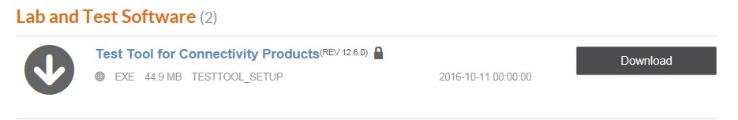
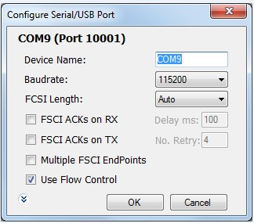
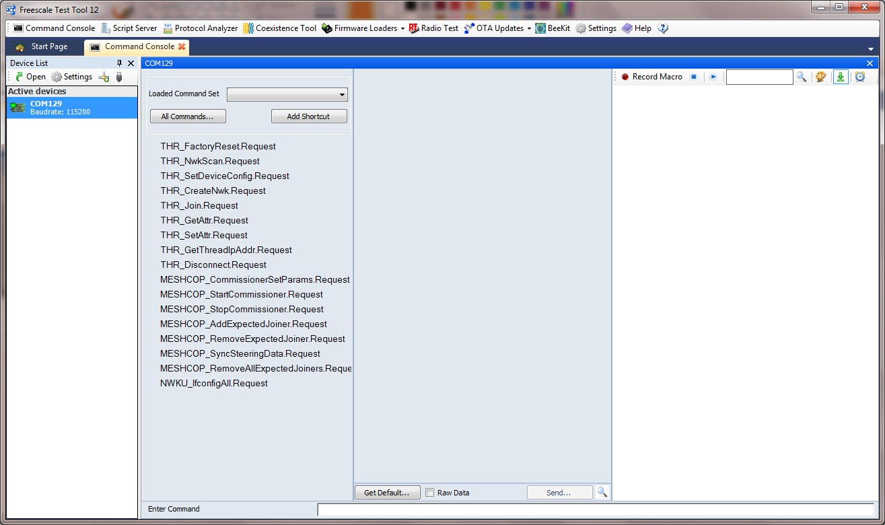
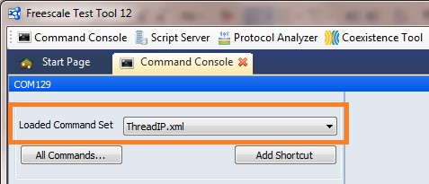
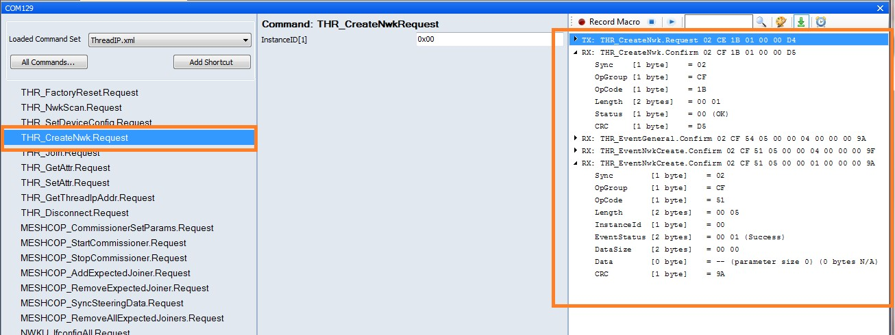
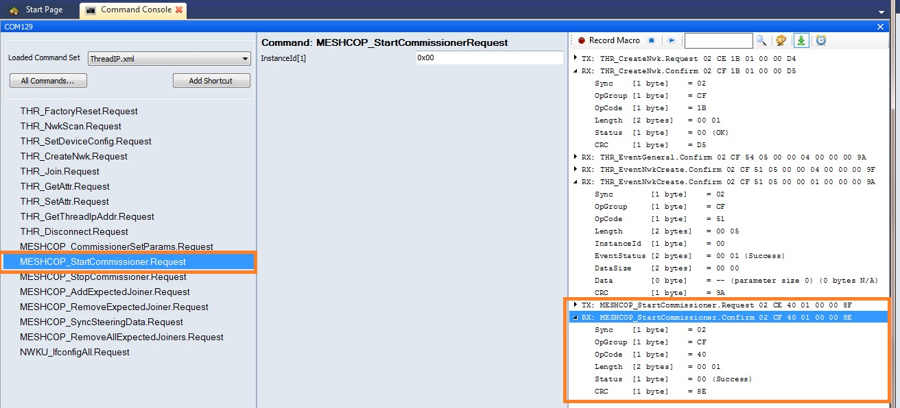
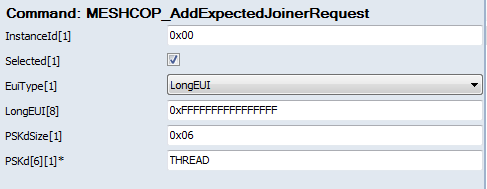
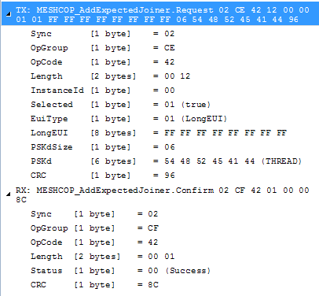
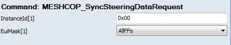

- To install Test Tool if not present on PC:
- Go to the KW41Z page
- Click to go to the Software & Tools tab
- In the Lab and Test Software select the link to Download Test Tool for Connectivity Products

Figure 1. Lab and test software tab
- Sign in or create a nxp.com account and agree to license terms if acceptable
- Wait for the installer to download
- Launch Test Tool Setup and follow the installation wizard to deploy the program
- Copy the ThreadIp.xml descriptor file from <Thread
Installation>NXP\SDK_2.2_MKW41Z512xxx4\tools\wireless\xml_fsci to <Test Tool
Installation>\Xml (for example, c:\NXP\Test_Tool_12.x.x)
- If Test Tool is already installed:
- Copy the ThreadIp.xml descriptor file from <Thread
Installation>\NXP\SDK_2.2_MKW41Z512xxx4\tools\wireless\xml_fsci to <Test Tool
Installation>\Xml (for example, c:\NXP\Test_Tool_12.x.x)
- Connect Node A via USB to the OpenSDA/Openlink port (or
the USB port on USB-KW24D512) to the Windows PC
- Launch Test Tool via Open the application as installed in
Windows Start Menu -> NXP Test Tool -> Test Tool 12
- In the tool bar, select Command Console
- The COM port for Node A should be displayed in the panel on the
left.
- Right-click the COM port, choose Configure Device
and change the baud rate to 115200bps, then click OK

Figure 2. Configuring the serial port in test tool
- Double click the COM port and the Command Console Window opens

Figure 3. Port opened in command console
- Ensure Node A is in factory reset state (LEDs flashing)
- In the Loaded Command Set select ThreadIp.xml

Figure 4. Selecting Thread XML
- Double-click the THR_CreateNwk.Request command in the commands panel and note the network creation process displayed in the log

Figure 5. Sending command to Create New Network in Test Tool via THCI
- Double click MESHCOP_StartCommissioner command to start a commissioner on the node with the default settings

Figure 6. Starting a Commissioner
- Add an expected joiner by clicking command MESHCOP_AddExpectedJoiner and filling in the parameters as in the figure below, then click Send… at the bottom of the middle panel

Figure 7. Add Expected Joiner command

Figure 8. Add an Expected Joiner Log
- Steer all nodes to join by clicking MESHCOP_SyncSteeringData.Request filling in the parameters as in the figure below, then click Send… at the bottom of the middle panel

Figure 9. Steer new devices to allow all joiners
- Initiate Node B joining by pressing any switch on the board and check
that it joins the network and becomes an Active Router